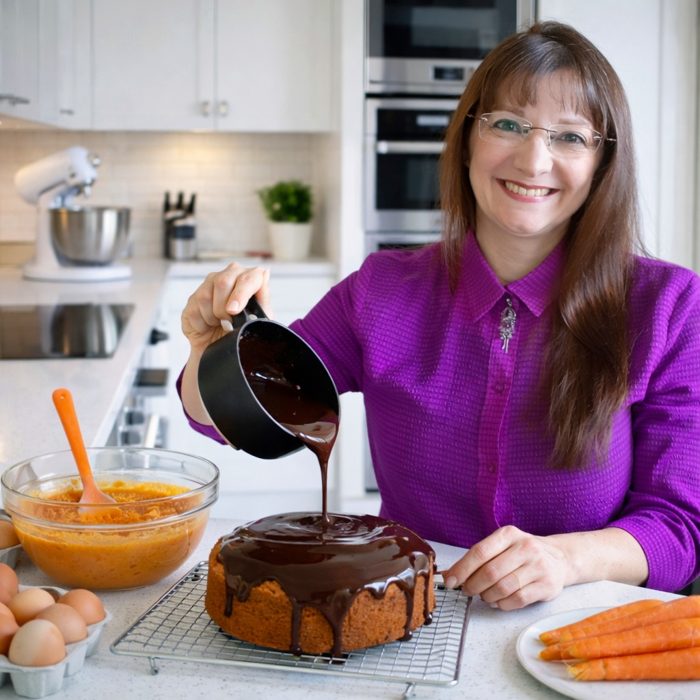
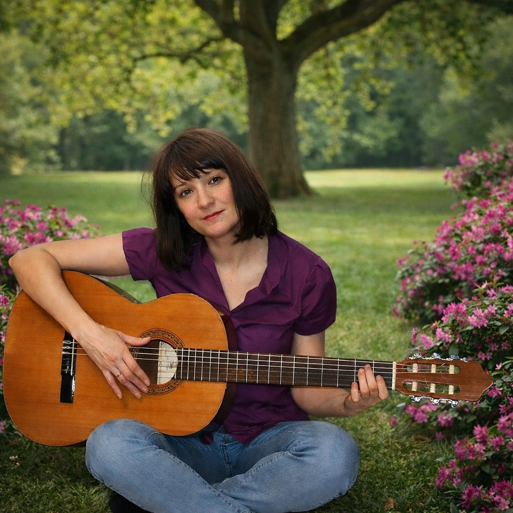

Olá, visitante! 👋
Olá! Meu nome é Maria Fábia Paz Vitorino Willems. Eu nasci no Brasil e vivi 27 anos na Alemanha. Tenho dupla nacionalidade: a brasileira e a alemã. Sou linguista, professora de línguas e tradutora. Vivo entre dois países, incorporando duas culturas lindas.
Nasci na "Terra do Sol" (o Ceará) e cresci na "Terra da Garoa" (São Paulo). Quando era criança, gostava de brincar de ser professora com meus irmãos e primos. Tinha até lousa, giz e apagador! Os aluninhos se comportavam bem e não reclamavam da aula.
Já na adolescência, decidi fazer um Curso Técnico de Processamento de Dados, mas era aluna do Ensino Médio de uma escola pública e morava na periferia. Por isso, precisei começar a trabalhar aos 15 anos como vendedora para poder financiar o curso no período noturno. Foi difícil, mas consegui me formar dois anos depois. Trabalhei na profissão, como digitadora num centro de computação, mas por pouco tempo. Embora adorasse aquelas máquinas, sentia a necessidade de exercer uma profissão que tivesse mais contato com os seres humanos. Trabalhei como auxiliar de escritório também. Foi aí que o sonho de criança voltou: ser professora. Voltei a estudar e me preparei para o vestibular.
Aos 20 anos, consegui entrar na universidade. Já no quarto semestre, comecei a lecionar português. O curso de Licenciatura em Letras com especialização em Português, Inglês e suas Literaturas exigia dedicação e muito estudo. Conseguir me formar exigiu, muito suor, abdicação, resilência, orações e o apoio da minha família. Esse curso corresponde, na Alemanha, ao curso chamado „Lehramt am Gymnasien/Staatsexamen“.
Trabalhei como Professora de Línguas (de Português, Literatura e Inglês) em colégios públicos e privados na capital de São Paulo (no Brasil) até 1996. Também tive experiência como Professora Coordenadora para Projetos Literários e Feira da Ciência por um ano. Foi sensacional.
Em 1996, casei-me e mudei-me para a Alemanha. Primeiramente tive que aprender a língua e conhecer a cultura do país. De minha segunda família recebi todo apoio que precisava para me integrar totalmente aos costumes do novo país. No segundo ano morando na Alemanha, voltei a lecionar Português na Universidade Popular de Stuttgart e foi um sensação incrível voltar à sala de aula. No terceiro ano, depois de intensivos estudos para conseguir passar na prova de acesso à universidade, Deus me abençou a conseguir uma vaga na Universidade “Karl Eberhardt” em Tubinga. Iniciei meus estudos em Linguística: Romanística (Português e Espanhol) e Germanística (Alemão). Terminei a graduação, com mestrado integrado, chamado de “Magister Artium” (M.A.). O tema do trabalho de finalização de curso teve uma pesquisa de 6 meses, foi escrito em língua alemã com o material de pesquisa (Corpora) em Português e com tema “A Comunicação na Internet – Uma Análise Linguística da Conversação nas Salas de Chat Brasileiras” .
Durante a faculdade, também trabalhei, lecionando algumas noites. Também frequentei a Academia para Formação de Professores da Universidade Popular de Stuttgart e da Associação das Universidades Populares do Estado de Baden-Württemberg nos fins de semana. Também valeu muito a pena fazer a Especialização no Ensino de Línguas para Adultos com ênfase no Ensino Interdiziplinar e com Mídia Digital na Educação. Foi assim que consegui concluir meus estudos, porém sigo me aprimorando smepre, afinal, a sempre algo a aprender. Não é verdade?
Em 2024, finalmente, realizei meu sonho de retornar à minha terra natal: o Brasil.
Em agosto de 2025, feliz da vida, abri minha firma, uma MEI (Micro Empreendedor Individual) para oferecer Cursos de Línguas, Acompanhamento Escolar e Aulas de Computação para a Terceira Idade online e na região onde moro.
📚 Experiências
Já são mais de 30 anos de experiência no ensino de línguas, trabalhando em escolas de línguas, universidades e empresas de médio e grande porte. Entre meus clientes estão:
Lecionar para mim não é apenas um trabalho, é uma missão. Tenho um enorme prazer em fazê-lo.
Hobbys
Adoro fotografar principalmente a natureza!


Na Alemanha, descobri o amor pela culinária. Antes eu cozinhava para não morrer de fome.
Comecei a aprender violão e teclado, um sonho antigo. Um dia eu vou conseguir tocar algumas músicas. Cantar, de jeito nenhum, pois sou extremamente desafinada. Só se acontecer um milagre mesmo.

💡 Para ampliar meus horizontes, busco novos desafios!